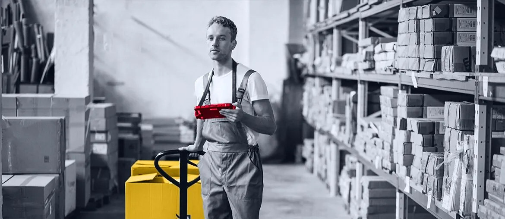

The webshop leads with product search, product information, and ordering. Map those steps to ERP and warehouse data before adding more shop features.
Prepared for Schmersal Group
Make logistics data match the new Schmersal Webshop
Saw you are adding material management and logistics capacity in Wettenberg. That is a strong time to check the software path behind product data, stock, orders, and warehouse handoffs.
Our read
Schmersal is not just adding headcount. You are scaling the flow behind safety technology products. The new Schmersal Webshop now puts over 15,000 products, product data, and ordering in one public surface. That raises the bar for internal material flow. If ERP, stock, and warehouse data are still checked by hand, the new logistics role may inherit friction instead of removing it.
Where we'd start
Run one audit on safe switching, signal processing, and automation products. Mark where stock, order, or product data is copied by hand.
What we'd do
We would run a scoped six-week pilot under your logistics or IT owner. Team shape: one solution architect, two backend engineers, one data engineer, and one QA automation engineer.
Map the flow
Trace product page, order, stock, and warehouse handoffs for three high-use webshop product families.
Clean the data path
Define API and database contracts for product master data, order status, and stock updates.
Build the pilot
Create one logistics view that shows material gaps, delayed orders, and manual rework points.
Protect release quality
Add tests for webshop data feeds, order handoffs, accessibility, and key product pages.
Java
.NET
Python
SQL
React or Angular
SAP BTP
Who is Elinext
Elinext is a full-cycle software development company, active since 1997, with about 700 in-house specialists and no freelancers. For Schmersal, the fit is secure enterprise work: ERP links, data pipelines, web systems, QA, and AI/ML support when useful. We hold ISO 9001 and ISO 27001 certifications. Our named customers include Siemens, Broadcom, Volkswagen, TRUMPF, and TUI. That experience fits the pilot above: industrial software, secure delivery, and careful release control.
Siemens
Broadcom
Volkswagen
TRUMPF
TUI
Proof

Manufacturing Execution System
Elinext helped modernize an older MES and integrate it with client business systems.
Read case study
Mobile Inventory App
A logistics app linked warehouse work to SAP S/4HANA and reduced manual entry risk.
Read case study